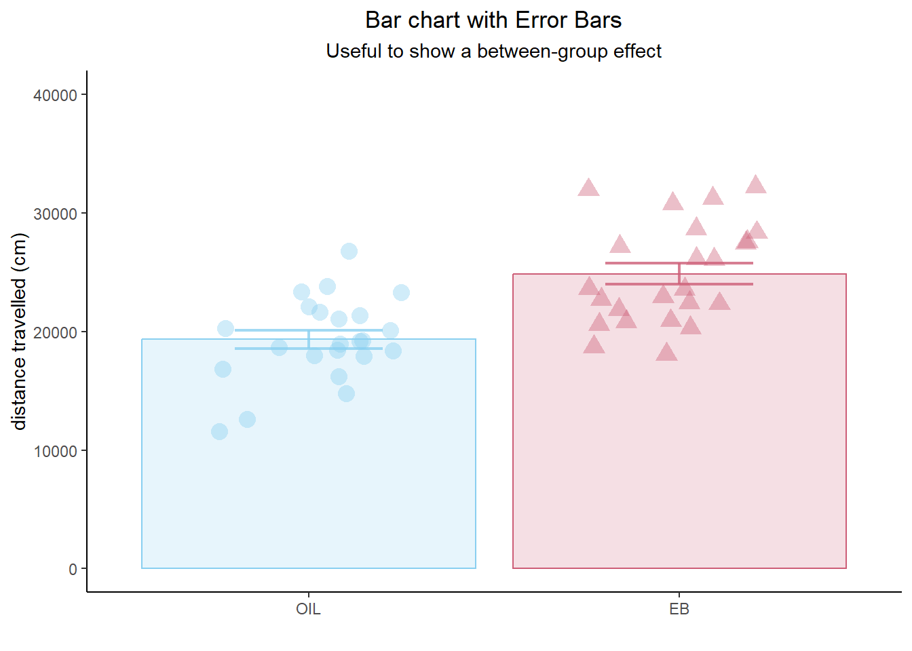
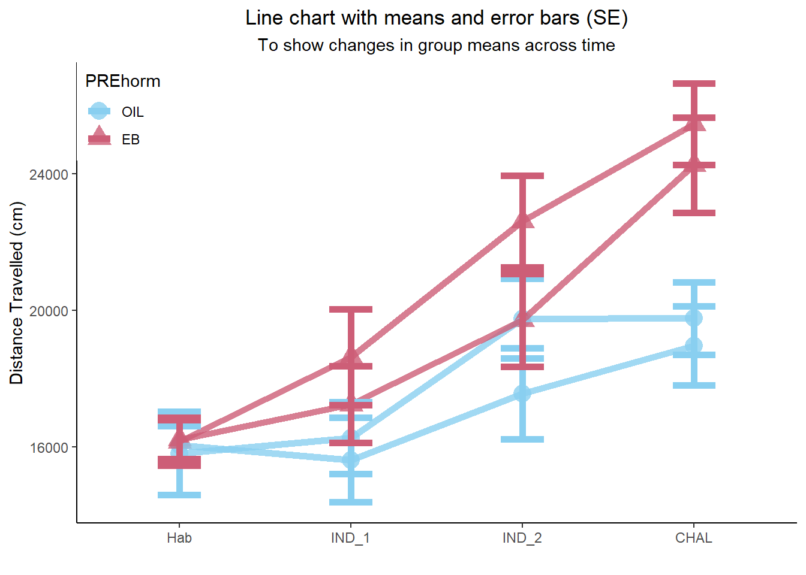
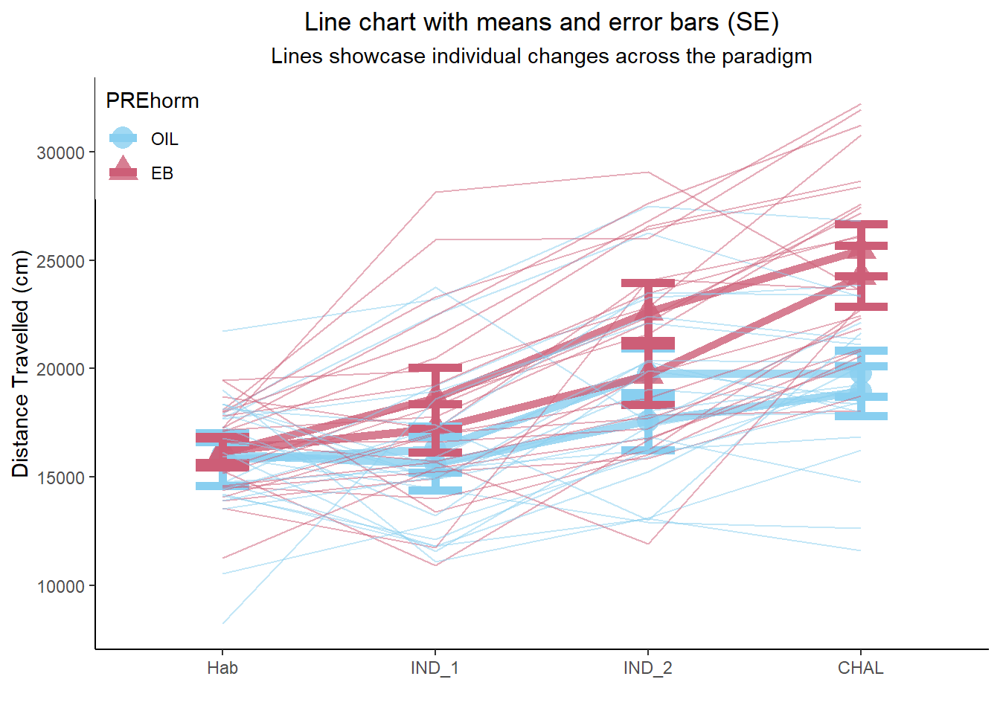

Load packages
library(tidyverse)
library(reshape2)
library(ggpubr)
Get Data: EB Rats (data from my MA thesis - published here)
data <- read_csv("EB_Rats_Nicotine_Sensitization.csv")
data$PREhorm = factor(data$PREhorm,# change the PREhorm variable to a factor
levels = c(0,1), # With two levels, 0 and 1 (ordered)
labels = c("OIL","EB")) # And label those levels, the condition names.
data$CHALhorm = factor(data$CHALhorm,# change the CHALhorm variable to a factor
levels = c(0,1), # With two levels, 0 and 1 (ordered)
labels = c("OIL","EB")) # And label those levels, the condition names.
Bar chart with error bars:
- A classic visualization used in basic neuroscience papers, yet surprisingly difficult to find information about online. Many people use boxplots instead because they can’t figure out how to generate the basic bar graph in R.
- A bar chart is a great way to showcase simple between-group effects. The bar chart can also be the foundation for more comprehensive vizualizations (e.g. overlaid with individual data points - see below)
CHAL <- as.data.frame(data$ID) # Create temp df
CHAL$PREhorm <- data$PREhorm # Attach hormone variables
colnames(CHAL) <- c("ID","PREhorm") # name them
CHAL$distance <- data$CHAL
n <- CHAL %>% # Get info about Input's n
group_by(PREhorm) %>%
summarise(n=n())
means <- CHAL %>% # Get info about mean distance travelled by each group.
group_by(PREhorm) %>%
summarise(mean=mean(distance))
sd <- CHAL %>% # Get sd info for each group
group_by(PREhorm) %>%
summarise(sd=sd(distance))
se <- sd[-1] # Drop the ID column, because it's problematic in the nest step and is not longer needed.
se <- se / sqrt(n$n-1) # calculate standard error
m_means <- melt(means) # Get data to ggplot format
m_se <- melt(se)
m_means$se <- m_se$value # Bind se values to the means df.
a <- ggplot(m_means, aes(x=PREhorm,y=value,colour=PREhorm,fill=PREhorm))+ # Create bar chart
geom_bar(stat = "identity", alpha=0.2)+
geom_errorbar(aes(x=PREhorm,ymin=value-se,ymax=value+se), width=0.4, size=0.8,alpha=0.8)+
scale_colour_manual(values=c("#89CFF0","#CD5E77"))+
scale_fill_manual(values=c("#89CFF0","#CD5E77"))+
theme_classic()+
theme(legend.position = "none")+
theme(plot.title = element_text(hjust=0.5))+
theme(plot.subtitle = element_text(hjust=0.5))+
labs(
x=" ",
y="distance travelled (cm)",
title = "Bar chart with Error Bars",
subtitle = "Useful to show a between-group effect"
)+
ylim(0,40000)
a # Check out the result - Bar chart with error bars
Add individual points
- It has become the accepted norm in neuroscience to showcase all the individual points over bar charts to better illustrate the spread of the data.
- Here, a new “layer” is added to the existing bar chart created above.
- The data for the individual points are called from the parent dataframe “data”.
a +
geom_jitter(data=data,aes(x=PREhorm,y=CHAL,shape=PREhorm),size=4,alpha=0.4,width=0.25)

Bar Chart with Lines for within-subjects data
- Bars can also be used as a base layer that can have within-subjects data overlaid.
- Here, data from the first (habituation) and the second (induction 1) day of behavioural testing are represented as bars on the x-axis. Individual subjects’ data are then overlain using geom_line().
- Including lines to represent individual subjects when showcasing within-subjects data better illustrates the overall nature of changes in behaviour across the group.
lines_data <- data[ ,1:7]
lines_data <- lines_data[-2]
lines_data <- lines_data[-2]
n <- lines_data %>% # Get info about Input's n
summarise(n=n())
means <- lines_data %>% # Get info about Input's mean distance value
summarise_at(vars(Hab:IND_1),mean)
sd <- lines_data %>% # Get sd info
summarise_at(vars(Hab:IND_1),"sd")
se <- sd[-1] # Drop the ID column, because it's problematic in the nest step and is not longer needed.
se <- se / sqrt(n$n-1) # calculate standard error
m_means <- melt(means) # Get data to ggplot format
m_se <- melt(se)
m_means$se <- m_se$value # Bind se values to the means df.
m_lines_data <- melt(lines_data, id.vars=c("ID","PREhorm","CHALhorm"))
a <- ggplot(m_means, aes(x=variable,y=value))+
geom_bar(stat="identity", alpha=0.2,colour="black",fill="black",size=1)+
geom_errorbar(aes(ymin=value-se,ymax=value+se),size=1,width=0.25, alpha=0.8,colour="black")+
theme_classic()+
theme(legend.position = c(0,1), legend.justification = c(0,1))+
theme(plot.title = element_text(hjust=0.5))+
theme(plot.subtitle = element_text(hjust=0.5))+
labs(x="",
y="Distance Travelled (cm)",
title="Bar chart with individual lines",
subtitle = "Shows within-subjects effect across time")
a + geom_line(data=m_lines_data, aes(x=variable,y=value,group=ID),alpha=0.8,size=1)
a + geom_line(data=m_lines_data, aes(x=variable,y=value,group=ID,colour=PREhorm),alpha=0.8,size=1)+
scale_colour_manual(values=c("#89CFF0","#CD5E77"))
2x2 Design: 1 btw-sub, 1 wi-sub variable
- Research designs often encompass multiple variables of interest. One way to showcase the nature of two interacting variables would be to plot bar charts with within-subjects lines next to each other to show within-sujects changes between the groups:
a <- data[,1:2]
a$PREhorm <- data$PREhorm
a <- a[-2]
b <- data[,8:9]
c <- cbind(a,b)
n <- data %>%
group_by (PREhorm) %>%
summarise(n=n())
means <- data %>%
group_by(PREhorm) %>%
summarise_at(vars(IND_2:CHAL),"mean")
sds <- data %>%
group_by(PREhorm) %>%
summarise_at(vars(IND_1:IND_2),"sd")
se <- sds [,-1]
se <- se / sqrt(n$n-1)
m_means <- melt(means)
m_se <- melt(se)
m_means$se <- m_se$value
a <- ggplot(m_means,aes(x=variable,y=value,colour=PREhorm,fill=PREhorm))+
scale_colour_manual(values=c("#89CFF0","#CD5E77"))+
scale_fill_manual(values=c("#89CFF0","#CD5E77"))+
geom_bar(stat="identity",alpha=0.2,size=1)+
geom_errorbar(aes(x=variable,ymin=value-se,ymax=value+se),size=1,width=0.25)+
theme_classic()+
facet_wrap(~PREhorm)
lines_data <- data[ ,1:5]
lines_data <- lines_data[-2]
lines_data <- lines_data[-2]
lines_data$IND_2 <- data$IND_2
lines_data$CHAL <- data$CHAL
m_lines_data <- melt(lines_data, id.vars=c("ID","PREhorm","CHALhorm"))
b <- a +
geom_line(data=m_lines_data, aes(x=variable,y=value,group=ID,colour=PREhorm),alpha=0.8,size=1)+
theme(plot.title = element_text(hjust=0.5))+
theme(legend.position = "none")+
labs(title="EB during induction enables expression of sensitization",
x=" ",
y="Distance Travelled (cm)")
ggsave("wi_CHAL.png",b,dpi=300,height=4,width=7)
- It is considered appropriate to connect means with a line when working within winthin-subjects data.
- Conventionally, between-groups data should not be represented with a line.
data2 <- data
data2 <- data2[-2]
data2 <- data2[-2]
m_data <- melt(data, id.vars=c("ID","PREhorm","CHALhorm"))
n <- data %>% # Get info about Input's n
group_by(`PREhorm`,`CHALhorm`)%>%
summarise(n=n())
means <- data %>% # Get info about Input's mean distance value
group_by(`PREhorm`,`CHALhorm`)%>%
summarise_at(vars(Hab:CHAL),mean)
sd <- data %>% # Get sd info
group_by(`PREhorm`,`CHALhorm`)%>%
summarise_at(vars(Hab:CHAL),"sd")
se <- sd[-1] # Drop the ID column, because it's problematic in the nest step and is not longer needed.
se <- se[-1]
se <- se / sqrt(n$n-1) # calculate standard error
m_means <- melt(means,id.vars=c("PREhorm","CHALhorm")) # Get data to ggplot format
m_se <- melt(se)
m_means$se <- m_se$value # Bind se values to the means df.
m_means$group <- c(1,2,3,4,1,2,3,4,1,2,3,4,1,2,3,4)
a <- ggplot(m_means,aes(x=variable,y=value,colour=PREhorm,shape=PREhorm,group=group))+
geom_point(size=5,alpha=0.8)+
geom_line(size=2,alpha=0.8)+
scale_colour_manual(values=c("#89CFF0","#CD5E77"))+
geom_errorbar(aes(x=variable,ymin=value-se,ymax=value+se),size=2,width=0.25,alpah=0.8)+
theme_classic()+
theme(plot.title = element_text(hjust=0.5))+
theme(plot.subtitle = element_text(hjust=0.5))+
theme(legend.position = c(0,1), legend.justification = c(0,1))+
labs(x="",
y="Distance Travelled (cm)",
title= "Line chart with means and error bars (SE)",
subtitle="To show changes in group means across time")
a

Line chart plus individual points
- Once the base layer of the line chart across days has been created, individual points or lines could be overlain to show individual subjects behaviour across the days of testing.
data2 <- data
data2 <- data2[-2]
data2 <- data2[-2]
data2$group <- 0
data2 <- data2 %>%
mutate(group = case_when(
data2$PREhorm == "OIL" | data2$CHALhorm == "OIL" ~ 1,
data2$PREhorm == "EB" | data2$CHALhorm == "OIL" ~ 2,
data2$PREhorm == "OIL" | data2$CHALhorm == "EB" ~ 3,
data2$PREhorm == "EB" | data2$CHALhorm == "EB" ~4
))
m_data <- melt(data2,id.vars=c("ID","group","PREhorm","CHALhorm"))
a +
geom_jitter(data=m_data,size=4,alpha=0.5,width=0.25)+
labs(
subtitle="Individual points helps showcase the nature of the data"
)
Line chart plus individual lines
a +
geom_line(data=m_data, aes(x=variable,y=value,group=ID),alpha=0.5)+
labs(
subtitle = "Lines showcase individual changes across the paradigm"
)

Continuous predictor + Continuous outcome
- To show group differences in a linear relationship between two continuous variables, assign the variable that you would consider to be the “predictor” to the x-axis and the variable that you would consider to be the “outcome” to the y-axis.
ggplot(data, aes(x=Hab,y=CHAL,colour=PREhorm,shape=PREhorm,fill=PREhorm))+
geom_point(size=5,alpha=0.5)+
geom_smooth(method="lm",alpha=0.2)+
scale_colour_manual(values=c("#89CFF0","#CD5E77"))+
scale_fill_manual(values=c("#89CFF0","#CD5E77"))+
theme_classic()+
theme(legend.position = c(0,1), legend.justification = c(0,1))+
theme(plot.title = element_text(hjust=0.5))+
theme(plot.subtitle = element_text(hjust=0.5))+
labs(
x="Distance travelled during the habituation session",
y="Distance travelled on the challenge day",
title = "Scatterplot with Lines of Best fit added for each group",
subtitle = "Shows the relationship between 2 continuous variables"
)